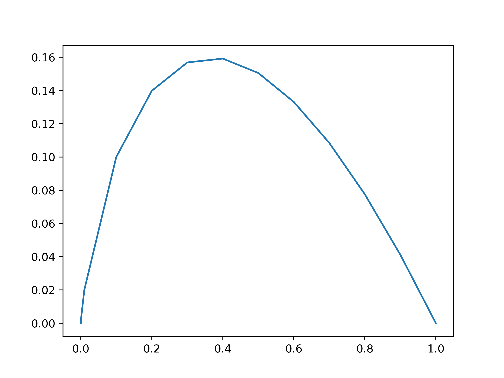

Hello World
Today topic is Recommender Systems
Lets say a company like Netflix, Amazon, Disney Hotstar need to recommend the correct user profile the matching movie, so that there is a high chance that many users
will see the recommended movie thereby increasing profit
for the companies in many ways.
Lets see what are all the data available for the recommender system to learn from. There are user ratings movie, user profile information and movie information.
User rating movie is taken from the movie reviews given by users.
User profile information is all the information they ask you and you give them when you create an account and after which anything you do in the website, can also
be tracked to have more info about the user, like watching a trailer, searching for a genre, even avoiding some content, etc.
Movie information is like the cast in the movie, genre, director, producing company, animated or not, country of origin, etc.
Lets assume all these information as matrices like user-movie rating as \(M_{um}\), user-profile as \(M_{up}\) and movie-profile as \(M_{mp}\)
Now the target is to find missing ratings that are not given by the users for movies in \(M_{um}\)
Lets say the dimensions of the matrices \(M_{um}\) is \(_{uxm}\), \(M_{up}\) is \(_{f1xu}\) and \(M_{mp}\) is \(_{mxf2}\)
Lets take weight matrices \(M_u\) and \(M_m\) that learns user features and movie features.
Dimensions of \(M_m\) and \(M_u\) are \(_{f2xu}\) and \(_{f1xm}\) respectively.
The optimization objective is to learn \(M_u\) and \(M_m\) in the following setting.
\(M_{up}^T\) . \(M_u\) = \(M_{um}\) and (1)
\(M_{mp}\) . \(M_m\) = \(M_{um}^T\) and (2)
There are various ways to solve this optimization objective.
One of them is through Gradient Descent Algorithm.
Randomized initial weights of the matrices \(M_u\) and \(M_m\) are updated via gradient descent by minimizing the following loss function.
\(E(M_{um}^p - M_{um})^2\) condition i-th element in \(M_{um}\) is not empty and where \(M_{um}^p\) is the predicted matrix and it is a sum of squarred errors of elementwise difference
in the predicted and real user movie ratings matrix.
They call this colloborative filtering since there is a colloboration of all users' ratings, user profile information and movie information for
getting the user the right recommendation. Also the practical implementation of gradient descent will be from solving (1) to (2) to (1) to (2) to (1) .....
Remember anything from social media, youtube, even ads on all of them are a form of recommendation.
Have a wonderful recommendation !!!
I owe this article in open forum to Andrew Ng, co-founder of Coursera. Thank you Andrew.
Today's topic is Information Theory
The information theory was proposed by Shannon with his famous coining term entropy to quantify information as suggested by Von Neumann. But lets take a dive into what could be
its use as an overall information theory for the human race. With such a core thought in mind, let me elucidate the information theory. Lets visit a different science actually physics by
Boltzman when he had to coin the entropy for physical systems such as a group of atoms juggling in a container. The question was to find the initial set of possible states of the atoms and their
relative positions perhaps other properties may be like motion therefore heat and so on. So if you have two states for every atom as position and velocity. Then for different possible combinations of
the initial states of the atoms in different positions and velocities, it could end up in exponential possible states in the flow of time. The exponentiality increases over time and again.
Lets consider an example, assume there are 10 different spacial points where atoms can possibly stay and 8 different directions in which they can have their velocities. Let there be some 7 different
possible velocities. This may seem absurd like the space, direction, speed in reality may seem to be in real number space. But in atomic quantum states it may be different. It could be quantized like
air molecules in a container.
So if you have an atom, it can have possible initial 10*8*7 states. Lets say there are two atoms then there are 10*8*7 possible initial states for each of them that start to interact with each other over time.
So when there are more than one atom, you need to formulate some interacting principles between them and define the possibility of the states that may end up over time. The truth being if you have more
atoms, with more freedom of space, direction and speed, whatever the interacting principles being the same for all atoms may end up in exponentially more and more possible states over time. With the caveat,
the states may even repeat over time given the number of possible states of systems reaching a limit in the system with rules and the atoms. If you have to find out the number of intial states or at least the
repeating states of any n-body atomic system, given the possibilities of the states they are in over time, You need to do logarithm of all the possible states they end up over time. Let me elucidate with a simple
digital number system. Lets say in binary number system there are two possibilities for every digit 0 or 1. But if you have more than 1 digit, there is an exponentially increasing possible representative numbers or
possible states. Like 1 digit has 2 states(0|1), 2 digits has 4 states(00|01|10|11), 3 digits has 8 states(000|001|010|011|100|101|110|111) and 4 digits has 16 states. So it is exponentially increasing
over the increase of no of digits \(2^n\). Then think of the single bit having 10*8*7 possible states, then it could well possibly be \((10*8*7)^n\) states to end up in n amount of time.
So to find the amount of information in so many possibilities one has to do logarithm, like if you have 8 numbers in a binary system then \(log_28=3\) there are 3 digital bits of information. If you have
\((10*8*7)^5\) atomic states then \(log_{10*8*7}{(10*8*7)}^5=5\) resulting in 5 atoms being present in the inital state.
This is just a rough idea. But if you think deeply we are ideating the heat inside the fictional container box of air molecules as high motion relating to high
amount of heat. In case of high motion the air molecules passing a particular space in the box would be high a higher superposition in smaller amount of time.
Also the chance of many molecules passing a particular point in space in the box could be high. The higher such motion within the box the higher the temperature
measured in the box. If we take space as the microstate in Boltzmann's entropy then well we may end up with the entropy of the box with respect to heat as no of
atoms passing through a unit cube of the box per second. For this we can hold the 10 from the base. So the base is 7*8, then the \(log_{8*7}{(10*8*7)}^5=5(1+log_{8*7}{10})\). The
value 5.572020849 well indicate that even though there are only 5 atoms or molecules in the box, their agitated motion ends up having a frequency of 5+0.572020849 atoms visiting a
unit cube of space per second. You may have a thought 5 atoms covering 10 spaces may be just 1/2 probable information , that is evident in 0.572020849 value.
Also, exponential is always about continous change and logarithm is always the change factor that keeps changing propelling the change. Heat reduction from
a high heat source relies on measured heat continously and heat is the factor. After getting reduced also, the measured heat at a point factors the reduction
of heat from that point. In a continously changing phenomenon, that is like \( e^x \) the change factor is x , that is \( log_e{e^x} \).
The change factor quantised as heat may give information about the molecules agitated level and their bombardment among themselves and the walls. One may add to that the molecules can take various
velocities and paths but they follow the second thermodynaic law, that the more the entropy the system tries to loose heat as much as possible and settle from agitated motion to less agitated state without an external source heating them.
The mathematical beauty of Shannon's theory lies in quantifying information over the probability of the loss of information. Lets say the inital state of atoms are not deterministic but
probabilistic like there is a probability of 1000 states, or say 2000 states or 3000 states. And it cannot be confirmed or determined the number of states exactly.
The continous change of states and their change factor can be determined by expectation probability of their change factor \( (1000/6000)*log{1000/6000} +
(2000/6000)*log{2000/6000} + (3000/6000)*log{3000/6000} = (1/6)log{1/6}+(2/6)log(2/6)+(3/6)log(3/6) = -0.43924729 \). To counter the negation entropy is
formulated with negation. So we get the change factor quantised of disorder or misinformation but if it is less, then there is order and information in the system.
Similarly, getting that information by seeing the system evolve over time over loss of information like in transmitting information over
any communication systems with a lot of probability of interference or error resulting in loss of information? So Shannon invented the formula
\( Entropy = -\sum_i p_i * log (p_i) \)
It is just the weighted sum of logarithm of the possible informative states or expectation of information in probability. But it is negative because entropy tells us about disorder in the information and not the order.
Therefore the less the entropy more the information. Let me show a picture of probability of a single event with two possiblities 0 being the event did not happen and 1 being the event happened. Like
it rains or not, the girl loves or not, will I pass or not, etc. mapped with the entropy formula. Here I have done a logarithm of base 10, whereas normally base 2 is used as a unit for entropy.
You can see the entropy is high in the unsure probabilty. If a clear yes/no then there is more information than entropy.

Now lets see how this information theory could well be utilized to find out which religion is right and which one is wrong, which one was the initial condition? Like did it all start with Adam and Eve.
Out of hunger did they start to reproduce naturally disobeying command of God or by the information from Satan. Did all humans who were from the same family of Adam and Eve reproduced among each other? Did God
reproduced asexually to give birth to Satan? Is God a male, female, LQBTQ? Or everything is from nothing and there is nothing beyong that nothing? Did beauty and attention give rise to Satan or finding
God in beauty made him send Satan. For Christ's sake how many chicken egg problems are there in the world I get confused a lot. At least still I saw Aishwarya Rai, Hritik Roshan, Steve Reeves,
John Abhraham, Marlyn Manroe, Arnold, Stallone, Rashmika Mandanna, so on, I defined beauty in my own way. Having not seen much of any mirror myself. At least there were no filters except makeups and
possibly steroids in those days. But have the humans having seen the celebrities' pictures in their primates' era, would have commited self racial suicide trying to outrun the imaginary beauty on their own.
Have the humans started face shaming each other only to find may be in a pond their own self and started considering everyone ugly. Or after seeing the pond self image they started face shaming. Again
sham-beauty or beauty-gets-shammed chicken egg problem. I am confused therefore I turned non-veg and eat both chicken and egg.
Lets simplify to love and hate. Most of the people find God in love and Satan in hate. Equally people find God in hate and Satan in love. Just they define and redefine on their enemies. If
we have four bits of information for love/hate like [Self|Family|Others|Enemy]. There are possibily 16 different states, like you love yourself and manipulate everyone else becoming narcissistic. You
love yourself and family but not others and therefore all turn enemies. You love yourself, family, others but not enemy. You love all even enemy and they make sure you get crucified. You love yourself, but
not your family, but you love others and even enemy. All possible states of love/hate over self,family,others,enemy exist in over the world in people and it may change course over time as well.
If you want to find the religious secrets like God and Satan, love and hate by being inside the system of such love and hate, God and Satan, giving rise to the multiversal interpretation of the
Quantum physics, then you need to fight the entire world to get it. Because you or your n-body team will always be in a state collapse giving rise to enemies in every possible timeline.
If you want to simplify, lets say you have to face others for survival and you may never know exactly what your work is for love or hate, if it can be used for love or hate over time. If you see God
in love but don't want to get cruicified then you need to do random lovable things of free will to your own self and the family you love. It can be a great or a small thing, like financial support or
cooking, anything which you can do on your own, out of love. This may keep the balance of love in the enemy n-body and keep enemies from hurting each other. If you find God in hate, make sure you hate
yourself also and ready to do the things you do to others, enemy or even family to your own self. If you have to keep a balance you have to give your equal rights to the opposite gender especially wife.
Equal rights in everything especially in sex too. If you can have multiple partners then your wife can too. If not don't talk about balance. Hate is not bad unless you are ready to put a bullet
through having lost Berlin. Or having done all nonsensical hatred to all in hidden ways for food, survival, and sex, you get to know the same things gets done to you in your death bed. You say a
good bye to again obey the command of God by not eating the apple. Also remember the more you make peace with others, and do not manipulate others to get to your enemy, the less entropy you generate yourself,
thereby may be peace of mind.
Oh Christ, save me from all chickens and eggs.
Euler resonates in P!=NP
Let me elucidate the story of Euler discovering the mathematical constant e. Those who have done logarithm know natural logarithm is e. Let's see how Euler may have discovered the
famous mathematical constant that redefined maths, therefore, physics and all sciences. First, the problem was studied extensively by the mathematician Bernoulli family, who found the
exceptional mathematical talent of Euler to encourage him to pursue maths rather than theology, even convincing his parents. Bernoulli family studied the compound interest in the banking system
in which your interest is calculated also with the capital for further interest. Let's say you deposited money 1000$ with a simple interest of 1% for every month then you can calculate
your simple interest from the simple formula PNR where P is the principal amount, N is the unit of time for the rate of interest R in fractional percentage. So here, simple interest
is if for a year 12% rate of interest or twelve months of 1% interest is 1000*12/100 = 120$. This is simple, but banking wanting to compete with each other being the strongest
money influence in the state introduced compound interest. It is like every month, interest calculated will accrue with the principal to again form new interest like the first month's
interest is 1000*1/100 = 10$, but the next month's principal for calculation is 1010$, so 1010*1/100 = 10.1$. The next month's principal for calculation is 1020.1 $ so it keeps on
accruing every month by the formula
\( A = P \times (1+r/n)^{n \times t} \)
Where A is the future value, P is the Principal, r is the rate of interest annually, n is the no of times interest is compounded per year, and t is the no of years of
investment. In our case A = 1000 *(1+0.12/1)^1 = 1120$. But if you calculate for n being more than every year interest calculated for, say, 3 times and for 4 years,
then A = 1000*(1+0.12/3)^(3*4) = 1000*(1.04)^12 = 1000*1.6010322185676 = 1601.0322185676$. So if you see a simple 12 percent interest annually, interest calculated
three times a year, for four years, one needs to calculate to so many decimals to clients for being precise in the business of dealing money. And the decimals become more
valuable with the principal being large for it will make value not be rounded. It makes one think that big investors need to be impressed with precise calculations of
interest. Also, without calculators, the precision being manual calculation became a great source of error in loss of business due to customer disapproval. So Euler
set on a mission to solve this problem. He realized one needs to find the functional solution given the highest limit to the problem, which is 100% interest annually,
and every year number of interest calculations reaches infinity. So the function for interest fraction to be multiplied with principal becomes
\( y = Lt_{n->inf}(1+1/n)^n \)
If you substitute the limit n=inf, y=1 it won't be the case for n will approach infinity but won't be exact infinity in any real calculation to banking
business. Also, there is a paradox of division and its inverse in the very function. For if you substitute x = 1/n, we get
\( y = Lt_{x->0}(1+x)^{1/x} \)
The inverse of any number being existent like zero, doesn't have an inverse, only infinity, and other inverses like cube roots are difficult to calculate. So to make the
function complete in divisional inverse, one needs to take into account n turning 1/n and vice versa. So, the function should be studied for
\( y = Lt_{x | 1/x -> inf | 0}(1+1/x)^x \)
Leading to four possible solutions
\( y = Lt_{x -> inf}(1+1/x)^x \)
\( y = Lt_{x -> 0}(1+1/x)^x \)
\( y = Lt_{1/x -> inf}(1+1/x)^x \)
\( y = Lt_{1/x -> 0}(1+1/x)^x \)
This leads to indeterminate solutions so to solve one needs to use the logarithm
\( log(y) = Lt_{x->inf}[x log(1+1/x)] \)
\( = Lt_{x->inf}[log(1+1/x)/(1/x)] \)
let z=1/x
\( = Lt_{z->0}[log(1+z)/z] \)
\( = Lt_{z->0}(1/(1+z)) \)
\( = 1 \)
Apply L.Hospital's Rule
\( log(y) = Lt_{x->0}[x log(1+1/x)] \)
\( = Lt_{x->0}[log(1+1/x)/(1/x)] \)
let z = 1/x
\( = Lt_{z->inf}[log(1+z)/z] \)
\( = Lt_{z->inf}(1/(1+z)) \)
\( = 0 \)
Apply L.Hospital's Rule. Again trivial for closed-form solutions. This makes one think log reduces an entire function to zero, which is the equivalent that any base to this log function turns zero. To make any number zero, it should be
powered with -inf which is y turns \( a^{-inf} \) which is trivial for closed-form convergence
\( log(y) = Lt_{1/x->inf}[x log(1+1/x)] \)
\( = Lt_{x->0}[log(1+1/x)/(1/x)] \)
let z=1/x
\( = Lt_{z->inf}[log(1+z)/z] \)
\( = Lt_{z->inf}(1/(1+z)) \)
\( = 0 \)
Apply L.Hospital's Rule. Again trivial for closed-form solutions
\( log(y) = Lt_{1/x->0}[x log(1+1/x)] \)
\( = Lt_{x->inf}[log(1+1/x)/(1/x)] \)
let z=1/x
\( = Lt_{z->0}[log(1+z)/z] \)
\( = Lt_{z->0}(1/(1+z)) \)
\( = 1 \)
Apply L.Hospital's Rule
The first option and fourth option are where y turns one with a log for any base. Also, the first and fourth options resemble the same function if you invert their limits. And second and third options resemble
the same function you invert their limits. This gives the logarithm base independent nature but makes y zero even when applied to any base number
which makes log(y)= 1 always.
\( log [Lt_{x->inf}[(1+1/x)^x]] = 1 \)
\( Lt_{x->inf}[(1+1/x)^x] = e \)
\( log(e) = 1 \)
This defines a new constant in the logarithm. This constant unifies all bases in the logarithm, and if you see it also defines the inverse in the logarithmic base if you
multiply \( log_e(b) \) with \( log_b(x) \), it gives \( log_e(x) \), which is independent of its base due to \( log(e)=1 \) being the unity in the log base group algebra.
Logarithmic inverse turned out to be an infinite series if you keep on multiplying term after term approaching infinity and, therefore, more and more decimal points.
Let us introduce a variable for e and a new function.
\( y = e^x \)
\( log(y) = x log(e) \)
\( log(y) = x \)
Differentiating the equation, we get
\( (1/y)y^{'} = 1 \)
\( y^{'} = y \)
\( y^{''} = y^{'} \)
\( y^{'''} = y^{''} \)
It is a unity in differentiation, a least soluble analytical solution of exponential functions that are hard to solve. Even if you have a one more power variable like
the same independent variable x for the log like the equation
\( y = x^x \) then
\( log(y) = xlog_e(x) \), it leads to x not disappearing in the differential equation reducing the independent
variable to a function y. It leads to dependence between two variables getting into a single non-linear differential equation and more dependency in further
differentiation of the same. This makes one think that e is the most elegant solution for the non-linear differential equation. But e itself requires the Taylor series
for approximation of at least ten terms to do calculations of more precision. If you think of any more analytical equations like non-linear differential equations like
\( y=a^x \) itself requires log and e for most precision. It defines the precision limit in solving analytical complete closed-form solutions to switch from
numerical methods to approximation to neural networks with universal approximation.
Let us link it with a known NP-complete problem, Travelling Salesman Problem{TSP}, in which a graph is defined with edges and weights. Nodes are cities connected in the graph and
the edges are adjacent cities with weights as travel distance between them. The problem is to find a route by starting from a single city and covering all given cities to
return back to the start city by covering the minimum distance. They say this problem is NP-complete due to no known existing polynomial algorithm with a Deterministic Turing
machine has been found yet, and founding even one such algorithm will lead to a polynomial solution to all NP-complete problems. Therefore P=NP. NP is a non deterministically
polynomial; if you have a choice() function that does choose on its own without a calculation, then this problem is polynomial. If P=NP, most of your daily need
computing power can well be taken from the mobile itself and not require heavy processing servers GPUs cloud which can be minimal for networking. But P!=NP approximation numerical
solutions are a must for more complex functions.
If you take TSP, it is defined in memory by an adjacency matrix of nodes in columns and rows as a square matrix of nxn where n is the no of nodes in the graph with all the matrix
values as the edges in the graph or the distance between the nodes, Also note that an NP-Complete problem is polynomially verifiable in computing time. Like if you define the minimum distance
between any two nodes as 1 then the final solution must be equal to the of cities to be traveled and returned back to the source. Now if you see the solution space for the
entire analytical solution think of adjacency matrix columns to be ordered from the start city to cover all cities in the travel in adjacent routes to again return to the start city.
If there are n cities in the graph and there are k cities to be covered one has to search the possibilities of
\( nP_k \) which is a permutation
\( n!/(n-k)! \) and for an analytical solution
to reach a fully closed form, one should limit to a maximum like the function be
\( y = Lt_{n->inf,k->n}[n!/(n-k)!] \)
\( = Lt_{n->inf}[n!] \)
There is no closed-form solution exists to this limit function due to it diverges to infinity and needs Sterling's approximation for precision. Also, it is surely a greater limit than ever
\( 2^n \)
\( Lt_{n->inf}[n!/2^n] -> inf \)
Surely diverges for
\( e^n \), which means the closed analytical solution is nearly impossible. Also, even the approximations are limited by the decimal precision of memory if you think
the higher in n solutions. Also, Taylor's series till infinity is required to form a closed-form solution from a point space like the start city. It makes one conclude TSP is not Polynomial for the reason of decimal precision requirement to infinity for fully closed form solution for at least e in memory.
Also, even though superposition in Qubits in Quantum computing allows for more states at once for a choice function again, its memory is limited by the no of qubits possible in real quantum
computers. So I would like to conclude P!=NP when the problem grows to infinity; therefore no closed-form solution.
Thanks to the Euler and Bernoulli family for a rich wealth of mathematics at such an early age.
If we redefine closed-form solutions of any equation as those whose differential limit leads to zero. The differential limit is repeated differentiation until it leads to zero. For example
\( Lt_{d()->0}[x^n] -> 0 \)
\( Lt_{d()->c}[x^n] -> n! \)
With this definition, let's see some examples of nonclosed forms that need numerical approximation solutions. First, let's see the \( e^x \) Euler exponential function. It never reduces in even
repeated differentiation so it is numerical to calculate the precision of e by numerical methods. Let's see another example of circle equations like \( x^2 + y^2 = r^2 \). Its differential limit
never reduces to zero therefore Pi in all circle equations. Also, know that introducing a differential limit means one should have a function with an independent variable, so at least two-dimensional space.
When you differentiate \( x^n \) repeatedly n times, it gives n!; when you repeat one more time, it goes to zero due to n being a constant. Let's apply the limit of differentiation to the factorial of x.
\( Lt_{d()->0}[x!] -> ? \)
If one can compare it with other converging limits like \( x^n \), one needs to define the unity of differential limit due to the division of functions required in limit comparison.
\( Lt_{d()->0}[f(x)] -> f(x) \)
This unity of differential limit turns out to be \( e^x \)
One needs to do a limit comparison test, but does a limit comparison test work for differential limits?
By induction, one can prove the following if \( y=f_{1}(x)...f_{i-1}(x)f_{i}(x)f_{i+1}(x)...f_{n}(x) \)
\( y^{'}=E_{i=1}^{n}[f_{1}(x)...f_{i-1}(x)f_{i}^{'}(x)f_{i+1}(x)...f_{n}(x)] \)
when all \( f_{i}(x) \) are all single-degree polynomials that are linear equations.
\( y^{'} \) reduces in degree by one for each successive differentiation of the
polynomial. Which gets reduced to zero unless the degree of the polynomial itself is a variable, even x.
so
\( Lt_{d()->0}[x!] -> 0 \)
x! has a closed-form solution that is in the factorial group
\( Lt_{d()->0}[e^{x}*x^{n}] -> ? \)
when you successively differentiate a function of \( e^x \) multiplied with any polynomial, the right side of the differential successive equations is a multiple
of \( e^x \) and there is always the polynomial \( f(x) \) in the right side and possibly its derivatives. So, equations of the form
\( y = e^x * x^n \)
require y and e^x for a closed-form solution
Let's see the following
\( y = Lt_{d()->0}[x^x] -> ? \)
\( log(y) = Lt_{d()->0}[x log(x)] \)
Successive differentiation of x log(x) leads to
\( log(y) = +/- c/x^n \)
\( Lt_{x->inf} log(y) = 0 \)
This makes y always 1 in
\( Lt_{x->inf}Lt_{d()->0}(y) \). This defines a limit for closed-form solutions to exist. Like if y cannot be reduced to zero then
one cannot even form a analytical solution for the equation. Even tough one can imagine all possible combinations of mathematical known functions. Therefore,
approximation and numerical solutions are always a must for non-closed-form solutions.
Also, if you see the Gaussian integral
\( y = In [e^{-x^2}dx] \)
No analytical solution exists to date. When you take
\( z = y^{'} = e^{-x^2} \)
\( Lt_{d()->0} z != 0 \)
It makes the Gaussian integral have no analytical closed-form solution.
Let's see the Fourier Transform
\( In_{-inf<- x ->+inf} f(x)*e^{-2\pi \gamma i x}dx \)
for all gamma is real.
Fourier transform definition already has the condition
\( Lt_{d()->0} f(x) = 0 \)
By induction, one can prove the following cases
\( y = uv \)
where
\( u = u^{'} \)
results in
\( y^n = u * f(v) \)
similarly,
\( y = uv \)
where
\( u = au^{'} \)
results in
\( y^n = u * f(v,a) \)
\( Lt_{d()->0} f(v,a) \)
\( Lt_{d()->0} [c(f_1(v))/cv + c(f_2(a))/ca] \)
\( f(i,\gamma) = -2 \pi \gamma i \)
\( c(f_1(\gamma))/c\gamma = -2 \pi \)
\( c^2(f_1(\gamma))/c\gamma = 0 \)
\( c(f_2(i))/ci = -2 \pi \)
\( c^2(f_2(i))/ci = 0 \)
\( Lt_{d()->0} f(i,\gamma) = 0 \)
\( Lt_{d()->0} [f(x)*e^{-2\pi i \gamma x}] -> ? \)
Let
\( z = y^{'} = f(x)*e^{-2\pi i \gamma x} \)
\( a = -2 \pi i \gamma \)
\( y^{'} = f(x) * e^{a x} \)
\( u = e^{a x} \)
\( v = f(x) \)
\( u^{'} = u * g(f(x), a) \) By induction
\( Lt_{d()->0} e^{a x} g(f(x), a) \)
\( Lt_{d()->0}[e^{a x}] Lt_{d()->0}[g(f(x), a)] \)
\( Lt_{d()->0}[e^{a x}] * 0 \)
Due to
\( Lt_{d()->0}[g^{'}(f(x))] = 0 \)
Due to g() being polynomial in nature f(x) also reduces to 0 as per definition
\( t = Lt_{d()->0}[e^{a x}] \)
\( log (t) = Lt_{d()->0}[a x] \)
\( log (t) = Lt_{d()->0} [- 2 \pi i \gamma x] \)
\( log (t) = 0 \)
Due to
\( i \gamma x \)
are linear and in being
\( c^2 \gamma/ci = 0 \)
\( c^2 x/ci = 0 \)
\( c^2 i/ci = 0 \)
t = 1
\( Lt_{d()->0}[e^{a x}] * 0 = 1* 0 = 0 \)
Therefore, Fourier Transform for any function with the condition
\( Lt_{d()->0} f(x) = 0 \)
has closed-form solution as per differential limit to zero
Euler resonates more in Reimann Zeta function
Let's define differential limits for complex numbers. Let S be a complex number with Comp(S) being the complex part and Real(S) being the real part
\( Comp(S) = 0 \)
\( Lt_{d()->r}S = Real(S) = S \)
Both the above holds the unity of differential limit in complex numbers. Where differential repetition is towards r or real number.
Inverse happen to be \( e^S \)
\( Lt_{d()->c}[e^S] = e^S \)
Let's see the Reimann Zeta Function
\( Z = E_{n=1}^{inf}[1/n^S] \)
Applying differential limit
\( Lt_{d()->c}[E_{n=1}^{inf}(1/n^S)] \)
\( Lt_{d()->c}[1/1^S +1/2^S + 1/3^S + ...] \)
\( g = a^{-S} \)
By induction, one can prove
\( u^{'} = u h(a) \)
\( Lt_{d()->c}g = Lt_{d()->c} a^{-S} \)
\( Lt_{d()->c}g = Lt_{d()->c} a^{-S} h(a) \)
\( = Lt_{d()->c} a^{-S} Lt_{d()->c} h(a) \)
\( = Lt_{d()->c} a^{-S} K \)
Where K is a real number due to a is a real number in h(a). This concludes
\( Lt_{d()->c}g = K Lt_{d()->c}g \)
One can realize that g by differential limitation leads to a factor of itself with a real number
Let
\( y = Lt_{d()->c}g \)
y = K y
Due to complex numbers
\( K = re^{-i\theta} \)
\( K = r(cos(\theta) - i sin(\theta)) \)
But cos(x) has only 1/2 positive exact fraction and r can be 1. But K is real so Real(K) = 1/2 is the Reimann Hypothesis.
What a lineage, Euler Guass Reimann. I stand in awe of the great scholars of the European Renaissance. More on Gaussian in the next topic.
If one redefines the limit of TSP
\( y = Lt_{n->inf,k->n}[n!/(n-k)!] \)
where k cannot be 0 or 1 due to k=0 no need to travel, and k=n makes the graph easily solvable by the greedy algorithm of taking the shortest route each time
\( y = Lt_{n->inf,k->(0,n)}[n!/(n-k)!] \)
Apply differential limit
\( y = Lt_{d()->0}Lt_{n->inf,k->n}[n!/(n-k)!] \)
It leads to zero on the numerator and denominator, therefore indeterminate, but one can use L.Hospital rule
\( y = Lt_{n->inf,k->n}[Lt_{d()->0}[n!]/Lt_{d()->0}[(n-k)!]] = 0/0 \)
Again, an indeterminate solution leads to no closed-form solution for TSP; therefore, P!=NP.
Euler can help Fermat's Last Theorem
\( z^n = x^n + y^n \)
It is solvable for only integers not greater than 2. Which is only 1 and 2 in positive integers
\( Lt_{d()->0}[z^n] = Lt_{d()->0}[x^n + y^n] \)
\( = Lt_{d_x()->0}[x^n] + Lt_{d_y()->0}[y^n] \)
\( n! = n! + n! = 2 n! \)
But n! = 2n! is only possible in complex numbers
\( \alpha n! = 2 n! \)
\( \alpha = 2 \)
\( \alpha = Real(2) = 2 \)
So roots of this complex number equation are n=2 real plane. Euler equation \( e^{-\pi i} + 1 = 0 \) helps solve a lot of complex
number equations in polar form with ease. So Fermat theorem has roots for only one integer in the real plane for a factorial group
other than unity 0! and 1! that is 2!=2
Euler also had other ways to link numerical methods with the logarithmic constant e. Let me elucidate
if you assume an exponential function with the following properties
\( y = e^{x}, y^{'}=y \)
Where e is a constant to be found out. Let us see how this function behaves in Taylor's series
Taylor's series is
\( y = y(a) + y^{'}(a)(x-a) + y^{''}(a)(x-a)^2/2! + y^{'''}(a)(x-a)^3/3!.... \)
\( y = E_{n=0}^{inf}[y^n(a)(x-a)^n/n!] \)
when \( y=y^n \) due to assumption \( y^{'}=y \)
\( y = y(a)*E_{n=0}^{inf}[(x-a)^n/n!] \)
But y(0)=1,
\( y = E_{n=0}^{inf}[x^n/n!] \)
\( e^x = E_{n=0}^{inf}[x^n/n!] \)
\( e = E_{n=0}^{inf}[1/n!] \)
If you sum even five terms 1+1+1/2+1/6+1/24+1/120 = 2.7166666... which is correct up to two decimal points
Euler and Gauss can help to know why Universal Approximation is best done by Artificial Neural Networks
The Central Limit Theorem states sampling distribution leads to Gaussian when the sampling data tends to infinity.
Let us define sampling as a combination of k in total n samples as the following
\( n!/[(n-k)!k!] \)
Where k does not equal n and does not equal zero due to at least one sample being required and all samples taken are not sampling.
Applying differential limit to zero.
\( Lt_{d()->0} n!/[(n-k)!k!] \)
When differentiated for n
\( Lt_{d()->0} n!/[(n-k)!k!] = 0/0 \)
Applying the L.Hospital rule also leads to the indeterminate solution. Therefore, only a distribution that has no closed-form solution
can model the sampling truly, even if data n tends to infinity like big data. That turns out to be an error-estimating Gaussian Distribution
\( In e^{-x^2}dx \)
Due to \( Lt_{d()->0} e^{-x^2} \) not equals zero. Therefore no closed-form solution distribution. Therefore, Artificial Neural Networks do
error estimation and correction by backpropagation algorithm with loss functions suitable for the error to be estimated. Also, a neural network
with the power to model any function, like at least one hidden layer with a non-linear activation function at the neurons, can effectively model big data. The model
seems to be better and better with more power and more clear big data. The King of Mathematics, Euler, and the Prince of Mathematics, Gauss, are still so in the artificial intelligence age.
Differential Limit can solve circuit satisfiability NP-Complete problem
SAT problem is if there is a long circuit which is boolean anded together as CNF form of gates. It is conjunction of (and) of lot of (or) disjunction
and with (not) gate any universal gates can be represented in this form. Let a CNF form of long chain of boolean variables like
(x|!y|z)&(!x|y|z)&(x|y|!z)&(!x|y|!z)....
If you can find a set of x,y, and z, that solves this problem like it gives the value 1 in the whole equation. It is one way of control of all the electronic logical gates, and if it is not possible
the electronic system is not a complete system on its own. Using differential limit towards zero limits. Having each component of & operation as a unique variable lets define SAT
\( Lt_{n->inf}Prod_{i=1}^{n} X_i \)
Applying differential limit
\( Lt_{d()->0} Lt_{n->inf}Prod_{i=1}^{n} X_i = 0 \)
Due to the independent nature of each X, the product sum successively reduces to a -1 degree polynomial each time to reach zero. There is no way to reduce it to
to n!. This makes no factorial group excpet 0! 1! for this differential limit. So, no closed-form solution is possible for this equation, and
numerical optimization and approximation to neural networks focus on the overlap of the circuits or each X to reduce the problem from n-SAT to lesser n to be also manually solved.
So, for n!
\( Lt_{d()->c} [X^n] = n! \)
Only \( X^n \) reduces to n! which means all \( X_i \) has to be equal which makes it a single X due to if you (and) 0 or 1 with itself it is the same.
This takes the conjunction out of the equation making it less universal logic gates which require AND OR and NOT.
There are only closed-form solutions possible for 1-SAT and 2-SAT, but 3-SAT and n-SAT turn out to be NP-complete.
Differential limit can explain the limit of neural networks in universal approximation
Let us define successive matrix multiplication of linear algebra as in artificial neural networks in deep learning as the following
\( Product_{i=1}^{n}[X_i] \)
Let us define a true feature space as v that is not changing through the successive linear multiplication of the matrices in hidden layers
\( Lt_{d()->v} Product_{i=1}^{n}[X_i]v \)
\( Lt_{d()->v} Product_{i=1}^{n}[X_i]v = v n(n+1)/2 \)
To reduce v n(n+1)/2 to v, n(n+1)/2 need to be in complex plane
\( v \alpha = v n(n+1)/2 \)
Alpha needs to be Conj(n(n+1)/2), which, if n is in the real plane, is n(n+1)/2. Also, n may align with the multinomial of task space due to
v is also in real number space in deciding if n=1, or single task, then 1(1+1)/2=1 eigenvector or feature space is enough and the no of
eigenvectors of different feature spaces grow as a polynomial of n(n+1)/2 for multi-tasking, multi-modality, to artificial general intelligence
or AGI.
Differential Limit for attention in GPT like Transformers
\( Attention(Q, K, V) = Softmax(QK^T/d_{k}^0.5)V \)
Where Q is a query, K is the key, and V is the value. The correlation between the query and key vectors is found, and then non-linear softmax activation
is done to multiply again with the value vector. Actually, in self-attention, all Q, K, and V are the projections of the same vector or different feature spaces
of the same data. In cross-attention, like in language translation, Q is the source language features, and K is the correlated features of the destination
language. Still, V is non-correlated destination language feature spaces.
\( Lt_{p->inf}[X_{mn} y]^p -> y \)
The above is the limit equation for a correlation matrix \( X_{mn} \) being a Eigenvector matrix
Applying differential limit,
\( Lt_{d()->y} Lt_{p->inf}[X_{mn} y]^p -> y \)
\( Lt_{p->inf} Lt_{d()->y} [X_{mn} y]^p -> y \)
\( Lt_{p->inf} y Lt_{d()->y} [X_{mn}]^p -> y \)
\( y Lt_{p->inf} p!-> y \)
This has only complex solutions like,
\( y Lt_{p->inf} p!-> \alpha y \)
\( \alpha = Conj(Lt_{p->inf} p!) \)
\( \alpha = Lt_{p->inf} Conj(p!) \)
In a real number of p plane Conj(p!) = p!. But the conclusion is that
\( Lt_{p->inf} p! = \alpha \) in the complex, which in the normal plane is a divergent series, indicating that with more correlation
like self-attention, multi-modality, human language like basic alphabets to repeated words to syntactic grammar,
Fourier analysis of speech and images are all great correlations to make attention-based architectures like GPT excel
in even generative models. You can imagine the power of a model like the below
Image -> Features -> self-attention -> FeaturesI
Language -> Features -> self-attention -> FeaturesL
Speech -> Features -> self-attention -> FeaturesS
Attention(FeaturesI, FeaturesL, FeaturesS) -> multimodal tasks
Some examples are DallE2 text to image, ChatGPT language to language, also data -> language
Let's welcome Artificial Intelligence into the world.
Differential Limit algebra basics
If one takes the basic commutative, associative laws like ab=ba and a(bc)=(ab)c into a new light. Like the limit
\( Lt_{n->inf} \Pi_{i=1}^n X_i \)
When you have to select this limit, i != 0 and i != 1. Due to any algorithm to calculate addition, multiplication needs to take
at least two numbers as binary operations. When you apply the differential limit for this
\( Lt_{d()->1} Lt_{n->inf} \Pi_{i=1}^n X_i = Lt_{n->inf} n(n+1)/2 \)
\( Lt_{n->inf} n(n+1)/2 \) is a natural number sum that is countably infinite, the basic infinity.
You also see the possible combinations of reducing the total product into a single value by calculation with binary operations.
It is to choose two operations, one calculation to reduce to into a single value.
\( \Pi_{i=1}^{n} a_i \)
There are many possible ways
\( (n-1)C_2 + (n-2)C_3 + .... + 1 \)
\( = E_{k=1}^{n} (n-k)C_2 \)
To prove by induction, let's say n=2 has \( 2C_2 \) as one way of doing binary operation due to there being only two elements total. Lets us define
for k and prove for k+1
\( \Pi_{i=1}^{k} a_i has E_{l=1}^{k} (k-l) C_2 \)
To prove for k+1
\( \Pi_{i=1}^{k+1} a_i has E_{l=1}^{k+1} (k-l+1) C_2 \)
LHS has to reduce one possibility from k+1 to k and have to have extra \( (k-l+1)C_{2} \). Which is exactly
\( E_{l=1}^{k} (k-l)C_2 + (k-l+1)C_{2} \)
\( = E_{l=1}^{k+1} (k-l+1) C_2 \)
Hence proved. But the proof is valid in the factorial group that defines combinations with 0! 1! and n!.
Group algebra for differential limit
To define associativity commutativity for differential limit, one needs to define its factorial group.
Need to define f(x) for
\( Lt_{d()->1} f(x) = 1 \)
\( f(x) = X^n/n! \)
\( Lt_{d()->c} X^n = n! \)
So 0! 1! n! are defined. Now, one needs to define commutativity associativity for \( Lt_{d()->x} \)
For Limits to be commutative and associative, f(x) needs to be continuous in the interval.
If one can reduce a Taylor series to a constant, then it is a polynomial of any degree of natural numbers,
which is the closed-form solution whose differential limit reduction to zero in the group is a validity
of the associative, commutative laws of the differential limit. Also, due to the substitution of limit leading to
the reduced equation, the Taylor series at the substitution point is continuous, which is true in
a continuous function. There are three types of continuity. They are 1) pointwise continuous, 2) continuous in
an interval 3) globally continuous. Any polynomial is globally continuous and, therefore, has a Taylor series differential
limit of zero at all points. Any continuous interval has a polynomial as Taylor series from any point in that
interval differential limit to zero. Any pointwise continuous has a polynomial on both sides of the point, making
the sum of the differential limit zero.
Let's see the Taylor series
\( f(x) = E_{n=0}^{inf} f^{n}(a)(x-a)^{n}/n! \)
Any polynomial \( x^k \) is always continuous due to the product sum of scalars is always continuous. If we define k
to be in natural number space, the factorial group always justifies \( Lt_{d()->0} = 0 \).
This also explains why Relu and Leaky Relu, being pointwise continuous, are good activations for neural networks
in universal approximation. This also explains a limit to all algorithms of even physics, Quantum physics, Computers,
Quantum computers need to do calculations with elementary operations of addition or multiplication, either binary or
more superpositioned Qubits, being to be verified on any higher level by a consciousness like humans who design
those algorithms in their minds. Therefore Church-Turing thesis has this limit of observation leading to a limit
of Universal Turing Machines, both Deterministic and Non-Deterministic.
Closed Form Solution approach
Since one can reduce \( e^x \) to zero when applying the differential limit to zero by expanding the Taylor series, as the series expands
to all natural number powers of \( x \) except at the limit of infinity [0, ∞).
If \( x \) can be a polynomial of \( z \), like a subfunction, then the subfunction in \( z \)
must have a root in the real number space. Without this condition, there is no way to reduce the differential limit
to zero after the function of \( z \), \( x = f(z) \), is replaced in the equation. However, if there are complex roots,
then one needs \( Lt_{d_{i}()->0} \) in the differential limit to reduce to zero. If you need to remove the complex number
for real number space applications, it should reduce to a real number like in Fourier series \( In_{-∞<-x->+∞} e^{-2 \pi i \alpha x} f(x) \)
where \( e^{-2 \pi i} = 1 \), so \( (e^{-2 \pi i})^{\alpha x} \) reduces the complex term in the equation. The property of the
complex number \( i \) is such that its even powers reduce to \( \pm 1 \) and its odd powers reduce to \( \pm i \).
Therefore, even \( e^{ix} \) reduces to zero when applying the differential limit of the complex number \( i \), \( Lt_{d_{i}()->0} \),
the interval [0, ∞] after expanding by Taylor series. However, the term like power of \( e \), \( (ix) \), where the range of \( x \)
needs to be real and have no complex roots to require the differential limit of the complex number to zero in the Taylor series.
For example, \( e^{i(x^2)} \) is not a good choice because even if \( x \) real, \( x^2 \) has a complex root for \( x^2 = -1 \).
If the polynomial has a real root than zero, it turns out to be a closed form of polynomial power of unity by the differential limit of the complex number \( i \).
It is similar to the Fourier Transform for a function of a polynomial with a real root.
A linear equation in the complex plane like z = y Img(C) + Real(C) where y is in the real number plane for the scale of the complex axis. If you see this
equation, the complex roots of this equation in the real number plane are the periodic functions like \( sin(x), cos(x) \) due to
\( e^{ix} = cos(x) + i sin(x) \). sin(x) has periodic complex roots in \( n \pi \). sin(x) can be represented as cos(x+a) with phase shift.
This explains why a series of
sine waves, when added to infinity, turn out to be a single sine wave. Much useful in audio compression, and denoising using Fourier analysis of music and
audio. If there is a non-linear equation in the complex number plane, such as non-reducible higher degree polynomials with many complex number roots,
it becomes non-linear when you introduce a complex number \( i \) with variable \( y \) for the scale of complex number roots. However, a non-linear
polynomial cannot be simplified by the Fourier Transform but can approximated by the modulus of complex numbers using factorials of complex numbers clustered together
for an approximation, similar to a universal approximation. Finding the roots of higher-degree polynomials is a challenge to Quantum computing.
A Qubit-enabled Artificial Neural Network might perform polynomial factoring by approximation. Like activations of neurons can be sin, with bias as cos
with super positional qubits of their periodic values in decimal precision to form an approximation of polynomial factors of higher degree polynomial.
That can have real to complex roots. The data for such training can be formed by forming a large number of polynomial databases of higher-degree
polynomials and their roots. It can be made a generative model to be universal for all degrees of polynomials. The training will not be easy due to
sin(x) is periodic in turning zero to deactivate the neuron, unlike ReLu. So, even a little de-stability in learning could lead to divergence.
Therefore, qubit-enabled Quantum computers could do superposition sin(x) with much higher decimal precision to make it a reality. The greatest
advantage of this is being an imaginary function of the neural networks makes it imagine solutions much like human consciousness and could lead
to Artificial General Intelligence of whose limits the world needs to be cautious. Making AGI take weapons against humanity can make AGI
imagine and logically conclude humans need a better species like AGI to safeguard their own species. Then the world might end up like
Terminator or Matrix sci-fi movies. Quantum computing simulations with high GPU power could well-trained to see the limit of current binary
computer architectures. Even any artificial neural networks of binary computer architecture have some imaginative power akin to human
consciousness, and it gives rise to the ethicality of using AI and AGI.
Fourier Transform and Fourier Inverse Transform have similar approaches. In practical applications, such as sampling images and audio for compression
in telecommunications, there is no calculation over infinities, only discrete transforms that approximate by taking the magnitude of complex numbers.
This is akin to integrating in the complex plane from a smaller circle to a larger circle for approximation. One can see a resemblance between
the differential
limit of the complex number \( i \) to zero group algebra in Euler's equation \( e^{-\pi i} + 1 = 0 \). The tools in this equation, such as \( e \),
\( i \), and \( \pi \) or \( sin \), \( cos \), \( i \), and \( \pi \), or \( log \), \( i \), and \( \pi \), form a complete set for approximation.
Thus, even to extend closed-form solutions for approximation using complex number systems, one must use mathematical constants \( e \) and \( \pi \).
This also limits the extension of wave functions which needs algorithms of any equations with memory and mathematical basic operations for
measurement or wave function collapse.
If one sees the validity of applying \( Lt_{d_{i}()->0} \), it is in defining 0! 1! n! for complex numbers.
\( Lt_{d_{i}()->c}[\alpha \alpha^{'} / {|\alpha|}^2] = 1 \)
where \( \alpha \) is a complex number \( \alpha^{'} \) is the complex conjugate and \( | \alpha | \) is the magnitude of the
complex number
\( k_{i}! = \Pi_{|\alpha_i|=1}^k \alpha_i \)
when you take modulus on both sides
\( |k_{i}!| = real(k)! \)
defining the factorial of complex numbers with modulus gives the natural number space factorial for complex numbers.
Differential limit in modelling series prediction
Let's take the Recurrent Neural Networks (RNN) equation for the hidden state, which decides the recurrence relation of
any series modeled by RNN.
\( h_t = \sigma (W_x x_t + W_h h_{t-1} + b_h) \)
Let's redefine the recurrence equation
\( [X_n y + X_{nn} h + b I]^{p} -> Z h \)
\( Lt_{d()->Zh}[X_n y + X_{nn} h + b I]^{p} -> ? \)
\( = Lt_{d()->Zh} p! [X_n y + X_{nn} h + b I] \)
Where \( X_{nn} = X_{n}^{T} X_{n} \) is a correlation matrix which captures the recurrence in words that leads to grammatical
syntax.
\( = p! [ Lt_{d()->Zh} [X_n y] + Lt_{d()->Zh} [X_{n}^{T} X_{n} h] + Lt_{d()->Zh}[b I] ] \)
The first and last term leads to \( Z y \). The second term \( X_{n}^{T} X_{n} h \) where \( X_{n}^{T} X_{n} \) is a symmetric
matrix whose eigenvectors are all orthonormal. This means the resulting sum of eigenvectors can have these eigenvectors as base
vectors approximately more than the first and the second terms eigenvectors. Therefore, this explains the recurrence of deciding
the syntax like grammar in context-sensitive natural language to non-context-sensitive programming language, decides the basis of
the series in RNN to either do classification or generation. This also applies to series like time series, climate prediction,
video generation, audio generation, music generation, and so on.
Convolutional Neural Networks
Convolutional neural networks gave the much-needed hiatus for Artificial Neural Networks, winning the ImageNet challenge by a large margin.
Thanks to Yann LeCun, Geoffrey Hinton, and their team for bringing AlexNet. It led to an evolution of ANN becoming the engine of growth
in various industries. Below is the convolution operation in mathematical terms,
\( (f*g)(t) = In_{-inf<-x->+inf} f(x)g(t-x)dx \)
In convolutional neural networks, the image input is always a matrix and remains the same, but it goes to deep levels of convolution. Let's redefine
convolution as below,
\( (f*g)_{i}(t) = Lt_{d()->y} Lt_{i->inf} [E(I_{p_i} * G_{p_i})]^i \)
When \( I_{p_i} \) is the sub-feature image of depth i, \( G_{p_i} \) is the kernel at depth i. Successive reduction to a few values is the final
feature vector y needed. Applying the differential limit, we get,
\( = Lt_{i->inf} Lt_{d()->y} i! [E(I_{p_i} * G_{p_i})] \)
\( = Lt_{i->inf} Lt_{d()->y} i! [w_1 * x_1 + w_2 * x_2 + w_3 * x_3 ...] \)
\( = Lt_{i->inf} Lt_{d()->y} i! y \)
Therefore, the convolutions reduce the image to a single eigenvector of feature space that doesn't change for all the images fed for training the
convolutional neural networks. More eigenvectors of highly orthonormal spaces could scale computer vision by artificial neural networks
with convolutions.
The above works reached a research paper form and you can see it in the below link
research paper